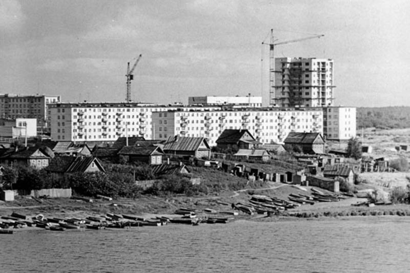
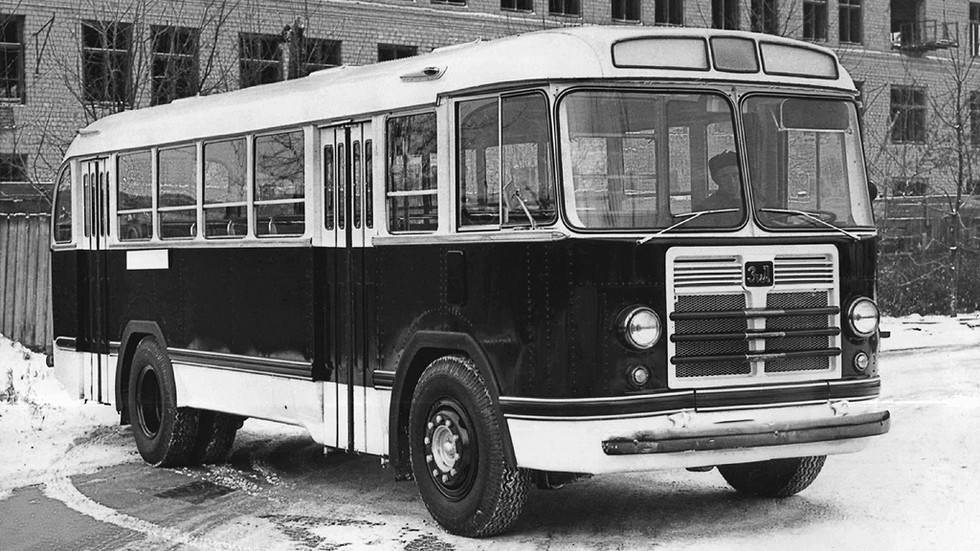
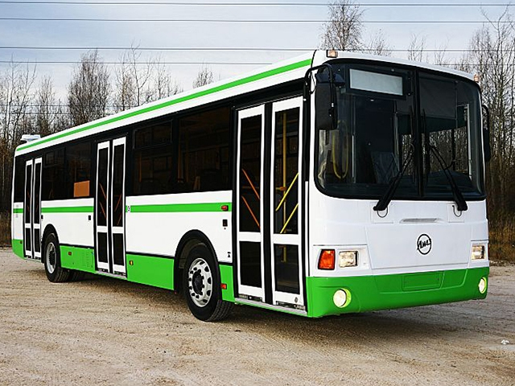

движения маршрутных автобусов ООО "АВТО" с 1 мая 2025 г. по 30 сентября 2025 г.
Уважаемые пассажиры! Все рейсы на Санкт-Петербург временно отменены!
ИСТОРИЧЕСКАЯ СПРАВКА О СОЗДАНИИ ООО «КПАП»
Содержание:
- Введение
- Организация ООО "КПАП"
- Реорганизация
1. Введение:
Организация собственного автотранспортного предприятия в Киришах диктовалось решением правительства о создании в этом районе Киришского энергопромышленного комплекса и нового города. Постановление Совета Министров СССР от 12 сентября 1960 года предусматривало создание в короткие сроки Киришского нефтеперерабатывающего завода и Киришской ГРЭС для обеспечения Северо-Запада страны нефтепродуктами и электроэнергией.Работы начались со строительства временного жилья и складских помещений. Уже тогда здесь расположилась транспортная контора Ленинградского совнархоза, которая располагала… 8 лошадьми. Это неудивительно, поскольку на месте будущего города вряд ли тогда можно было передвигаться, кроме как пешком или на лошадях. С такими транспортными средствами началось строительство нового города, и первыми заботами киришских транспортников были устройство и содержание конюшен, заготовка для лошадей корма.
Однако скоро появилась возможность завести на организующуюся стройплощадку автомобили.

2. Организация ООО "КПАП":
Автотранспортная контора со всеми службами была организована 1 октября 1961 года распоряжением № 735 Ленинградского Совнархоза. С этого времени начинается существование в Киришах собственного автотранспортного предприятия. С июля 1963 года Киришская автотранспортная контора была преобразована в 129-й грузовой автопарк треста грузовых перевозок Ленинградского Управления автомобильного транспорта Минавтотранса РСФСР. Это было одно из первых автотранспортных предприятий общего пользования, вошедших в состав вновь созданного треста.
С этого года наряду с грузовыми перевозками хозяйство начинает осуществлять и пассажирские. Сначала был один автобусный маршрут «Вокзал-Лесной», затем их стало 2, прибавился маршрут «Вокзал-Учкомбинат». Машины ходили медленно (средняя скорость автобусов в 1963 году – 12,9 км.ч), не всегда соблюдая график движения, но тем не менее это было уже регулярное автобусное сообщение важнейших районов строящегося города и промышленного комплекса.

3. Реорганизация:
В связи с реорганизацией Киришского АТП в феврале 1983 года образовалось Киришское пассажирское автопредприятие. Распоряжением Мэрии г. Кириши №1042-р от 10 сентября 1992 года зарегистрировано Киришское муниципальное пассажирское автотранспортное предприятие, преобразованное в соответствии с Распоряжением Мэра г. Кириши № 438-р от 23 февраля 1993 года в Акционерное общество открытого типа "Киришские пассажирские автотранспортные перевозки", с 27 июня 2002 года переименовано в Открытое акционерное общество "Киришские пассажирские автотранспортные перевозки".
В соответствии с Федеральным Законом "Об Акционерных обществах", приказа № Ю-1352, 27 июля 2006 года ОАО «КПАП», в соответствии с ФЗ, преобразовано в Общество с ограниченной ответственностью «Киришские пассажирские автоперевозки». Основными видами деятельности ООО «КПАП» является выполнение пассажирских перевозок в г. Кириши, Киришском районе , оказание услуг по ремонту, мойке, диагностике, шиномонтажу, медицинское освидетельствование водителей, аренда площадей, стоянка автомобилей, заправка автомашин для организаций и населения, обучение в автошколе , и др).

Организация, осуществляющая контрольные функции:
- На муниципальных маршрутах:
Уполномоченный орган местного самоуправления
г.Кириши, ул.Советская, д.20, тел.: 8(81368)553-15c